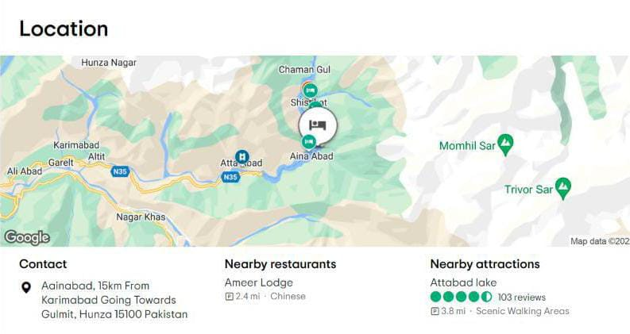

Hunza Tour Packages 2022 by Pakistan Tour and Travel provide a chance to witness paradise on earth Hunza at an altitude of 2500 meters. A lot of remarkably, Gilgit Baltistan Valley attracts thousands of tourists yearly. Apparently, Hunza tour packages are the synonym for Tourism in Pakistan. In the year 2021, we are taking most of the Tourists from Islamabad to Hunza Valley by road. Although some consumers prefer traveling by air from Islamabad to Hunza. Book any Hunza tour from our exclusive range of Hunza tour packages now:
The Luxus luxury hotel is here to offer you a unique journey, creating with you memorable experiences of stay, relaxation and rejuvenation in Attabad, Hunza. Inspired by the endless blue colors of the sky and the lake, Luxus Hunza combines high-quality services that go beyond the standards for a truly luxurious hospitality experience.
Luxus luxury Hotel: Aainabad, 15km From Karimabad Going Towards Gulmit, Hunza 15100 Pakistan
Nearby restaurants: Ameer Lodge
Nearby attractions: Attabad lake